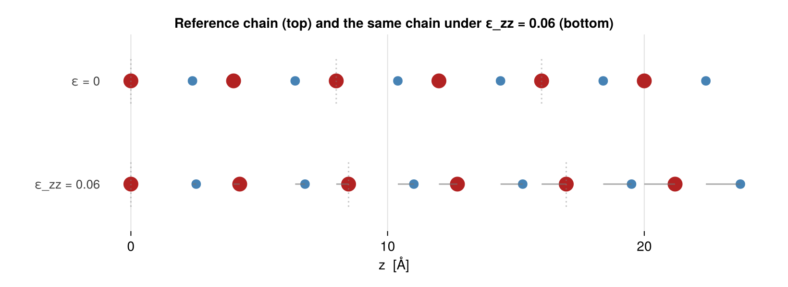

Strain, magnetoelasticity and volume grids
Force constants answer "what does it cost to move one atom?". This page is the other lattice question — "what does it cost to deform the cell?" — and the readouts built on it: the magnetoelastic constants, the magnon–phonon vertices, and a volume grid of fits for magnetovolume coupling.
The models on this page
The same one-dimensional superexchange chain as the lattice-dynamics page — two Fe per cell with a bridging O, unequal Fe–O spacings — fitted under the acoustic sum rule (a strain derivative has no meaning without it, see below), plus a second basis further down that carries the ε-linear content the magnetoelastic tier needs:
using SLCE, LinearAlgebra, Random
import Spglib # activates the real space-group backend
nat = 4
cr = Crystal(Lattice([5.0 0 0; 0 5.0 0; 0 0 8.0]),
[0.0 0.0 0.0 0.0; 0.0 0.0 0.0 0.0; 0.0 0.3 0.5 0.8],
[1, 2, 1, 2], ["Fe", "O"])
spec = BasisSpec(cr; lmax = ["*" => 1, "O" => 0], pmax = 2, sectors = [
Sector(spin = (sites = 1:2,), cutoff = 4.2),
Sector(spin = [1, 1], disp = (degree = 2,), sites = 2:3, cutoff = 4.2),
Sector(disp = (degree = 2,), sites = 1:2, cutoff = 4.2)])
basis = SLCEBasis(cr, spec; backend = SpglibBackend())
truth = SLCEModel(basis, 0.0, randn(MersenneTwister(1), n_salcs(basis)))
prov = DatumProvenance(; reference_id = "ref", reference_fingerprint = crystal_fingerprint(cr))
rng = MersenneTwister(7)
randcfg() = reduce(hcat, [normalize(randn(rng, 3)) for _ = 1:nat])
data = map(1:300) do _
e = randcfg()
u = 0.08 .* randn(rng, 3, nat)
TrainingDatum(; energy = predict_energy(truth, e, u), directions = e,
magmoms = ones(nat), displacements = u, provenance = prov)
end
jds = SLCEDataset(basis, data; use_torque = false, use_force = false)
joint = SLCEModel(fit(SLCEFit, jds, OLS(); asr = false)) # violates the sum rule
constrained = SLCEModel(fit(SLCEFit, jds, OLS(); asr = true)) # the default
spins = randcfg()┌ Warning: after dropping the tied orbits, 10 flat direction(s) remain in the structural expansion: some coefficient combination is still undetermined on this cell. Run `identifiability` on the fit and treat q ≠ 0 readouts as unconstrained
└ @ SLCE ~/work/SLCE.jl/SLCE.jl/src/fitting/asr.jl:450What a strain does to this cell
Deforming the cell is not a displacement pattern you can draw inside one cell: the field $\boldsymbol u_i = \varepsilon\cdot\boldsymbol R_i$ grows with the position, so its effect is visible only across several repeats. That is the whole reason this page needs a separate machinery from the force constants, and it is worth seeing once:
using CairoMakie
CairoMakie.activate!(type = "png")
zc = cartesian_positions(cr)[3, :]
c = cr.lattice.vectors[3, 3]
isFe = cr.species .== 1
η = 0.06 # a big strain, for legibility
fig = Figure(size = (820, 300))
ax = Axis(fig[1, 1]; xlabel = "z [Å]",
title = "Reference chain (top) and the same chain under ε_zz = $η (bottom)")
hidespines!(ax); hideydecorations!(ax)
for (row, s, lbl) in ((1.0, 0.0, "ε = 0"), (0.0, η, "ε_zz = $η"))
for rep = 0:2 # three repeats: the affine field accumulates
for a = 1:nat
z0 = zc[a] + rep * c
scatter!(ax, [z0 * (1 + s)], [row]; markersize = isFe[a] ? 22 : 14,
color = isFe[a] ? :firebrick : :steelblue)
s == 0.0 || lines!(ax, [z0, z0 * (1 + s)], [row, row];
color = (:gray45, 0.6), linewidth = 1.5)
end
lines!(ax, fill(rep * c * (1 + s), 2), [row - 0.22, row + 0.22];
color = (:gray, 0.45), linestyle = :dot)
end
text!(ax, -1.2, row; text = lbl, align = (:right, :center), fontsize = 13,
color = :gray25)
end
ylims!(ax, -0.45, 1.45); xlims!(ax, -4.5, 3 * c + 1)
fig
The grey ties show the displacement each atom picks up: zero at the origin, growing with z. Nothing in predict_energy can express that, because its displacement argument is one vector per basis atom — cell-periodic by construction.
Homogeneous strain
A strain cannot go through predict_energy at all: it moves the atom at R + L by ε·(R + L), which grows with the lattice vector, so the field is not cell-periodic. It goes through the affine path instead — the same machinery rotational invariance is measured with.
strain_derivatives returns the exact derivatives at the model's own reference:
D1 = strain_derivatives(constrained; spins = spins, order = 1)
println("∂E/∂ε (= V·σ) = ", round.(D1; sigdigits = 3))∂E/∂ε (= V·σ) = [0.0 0.0 0.0; 0.0 0.0 0.0; 0.0 0.0 0.0]D1 is exactly zero, and not by luck. A displacement site factor is a homogeneous polynomial of degree 2k + l, so substituting the affine field turns a term of total displacement degree n into a degree-n polynomial in ε — the order-n strain derivative collects terms of degree n and nothing else. The basis above declares disp = (degree = 2,) only, so it has no ε-linear content and its reference is stress-free in the displacement channel by construction. The ε-linear magnetoelastic constants live in the degree = 1 (relative-displacement) sectors — the same ones that feed the forces — never in single-site degree = 2 monomials, which enter the strain expansion only at O(ε²).
The strain measure is Biot (Seth–Hill m = 1): the deformation is defined as F = I + ε with ε symmetric, which makes the substitution u_i − u_j = ε·d_ij exact rather than a linearization. order = 1 is the same number in every member of the Seth–Hill family; order = 2 and beyond are not, so record the measure — and the spin state — with any elastic constant you quote.
The acoustic sum rule is required, and at order ≥ 2 it is not enough
A strain displaces site i by ε·(R_i − origin). Moving the origin adds the uniform translation ε·t to every displacement, changing the energy by ε : (Σ_i ∇_i E) — so the strain response is origin-independent exactly when Σ_i ∇_i E = 0, which is the acoustic sum rule. On a model that does not satisfy it there is no answer to give: the origin is unbounded, so the number would be whatever coordinate system you happened to write the crystal in. strain_derivatives therefore throws on joint, the unconstrained fit above:
try
strain_derivatives(joint; spins = spins)
catch err
println(join(first(split(err.msg, ". "), 2), ". "), ".")
endstrain_derivatives requires a model that satisfies the acoustic sum rule: asr_residual(model) = 0.1398910397980741 exceeds 1.0e-12. A homogeneous strain displaces site i by ε·(R_i − origin), so shifting the origin by t changes the energy by ε : (Σ_i ∇_i E).The tolerance it enforces is tighter than the one you would use to judge asr_residual elsewhere, because the strain path weights the residual by the site positions |R_i| before it reaches the answer.
At order = 2 the sum rule stops being sufficient, and this is worth understanding before quoting an elastic constant. The ASR is the identity Σ_a ∂E/∂u_a ≡ 0 in the atom variables — an identity on cell-periodic fields. At ε = 0 the affine field is zero, hence periodic, hence covered; one order further out it is not, and what would be needed is the stronger per-site statement, which the constraint does not imply. The gap is the home-image gauge: a term's content is anchored at whichever image the cluster list calls "home", while its translation partners sit on the images the clusters actually reach. When those differ, the cancellation is split across cells and the per-cell energy picks up a piece linear in the cell's position.
The chain here is exactly that case — its bonds run between an atom and images that are not the home-cell representative — and strain_derivatives refuses rather than returning a description-dependent number:
try
strain_derivatives(constrained; spins = spins, order = 2)
catch err
println(first(split(err.msg, ". "), 1)[1], ".")
endthe order-2 strain response of this model is not origin-independent (‖ΔD‖/‖D‖ = 5.330219941043199 between two origins), so it is not a property of the model and no number can be returned.It is not a small correction. The escape hatch exists to make that measurable, never to be used for a result:
raw = strain_derivatives(constrained; spins = spins, order = 2, check_origin = false)
alt = strain_derivatives(constrained; spins = spins, order = 2,
origin = [7.0, -3.0, 2.5], check_origin = false)
println("‖ΔD²‖ / ‖D²‖ between two origins: ", round(norm(alt - raw) / norm(raw);
sigdigits = 3))‖ΔD²‖ / ‖D²‖ between two origins: 3.59The fix is the crystal description, not the fit: place the atoms so that each one's home representative is the image its clusters use. The simpler chain used in the rest of this page — two atoms at 0 and 1/3 of the cell, bonded inside it — answers, and its check passes.
Magnetoelastic coupling: the ε-linear tier
order = 1 is where the magnetoelastic deliverables live, and the two paragraphs above are the reason it is a tier and not just the first term of a series: the sum rule buys origin independence exactly where the affine field is periodic, and the Seth–Hill measure drops out of ε-linear content unconditionally. Everything second order in ε is conditional on both; nothing here is.
The basis above carries no degree = 1 content, so it has no magnetoelastic coupling at all. Here is one that does. It also switches to the simplest crystal that can carry the deliverable — a two-atom chain whose single bond lies inside the cell — because the per-bond split below is a property of a bond only when the bond's displacement content is relative, which is the condition the admonition at the end of this section spells out:
mecr = Crystal(Lattice(Matrix(3.0 * I(3))), [0.0 1/3; 0.0 0.0; 0.0 0.0], [1, 1], ["Fe"])
mespec = BasisSpec(mecr; lmax = 1, pmax = 2, sectors = [
Sector(spin = [1, 1], disp = (degree = 1,), sites = 2, cutoff = 1.1), # magnetoelastic
Sector(disp = (degree = 2,), sites = 1:2, cutoff = 1.1)]) # force constants
mebasis = SLCEBasis(mecr, mespec; backend = SpglibBackend())
# The ground truth must be ASR-FEASIBLE: the fit below imposes the sum rule, so a freely
# drawn coefficient vector would describe a surface the fit cannot represent, and every
# number after it would report that mismatch instead of the deliverable.
merep = SLCE.build_asr(mebasis)
metruth = SLCEModel(mebasis, 0.0,
merep.Z * (0.5 .* randn(MersenneTwister(4), size(merep.Z, 2))))
mecfg() = reduce(hcat, [normalize(randn(rng, 3)) for _ = 1:2])
meprov = DatumProvenance(; reference_id = "me",
reference_fingerprint = crystal_fingerprint(mecr))
medata = map(1:400) do _
e = mecfg()
u = 0.08 .* randn(rng, 3, 2)
TrainingDatum(; energy = predict_energy(metruth, e, u), directions = e,
magmoms = ones(2), displacements = u, provenance = meprov)
end
memodel = SLCEModel(fit(SLCEFit, SLCEDataset(mebasis, medata; use_torque = false,
use_force = false), OLS(); asr = true))
dJ = exchange_strain_derivatives(memodel)
println(dJ)
for ((a, b, R), T) in dJ.pairs
println("bond ($a, $b, $R): ∂M^{xx}/∂ε = ", round.(T[1, 1, :, :]; sigdigits = 3))
end┌ Warning: ASR: some columns cannot appear in any translation-invariant model (structurally zeroed by the constraint for every support). The sum rule holds separately in each spin sector, so a column survives only if the truncation carries a partner with the SAME spin invariant: for a spin-free displacement channel that means further pair orbits (widen the cutoff), for a spin-dressed one a term dressing the same spin factor differently — e.g. a displaced ligand. WHEN a symmetry operation exchanges the bond's two ends and both ends carry the same spin rank, the parity is decidable in advance: translation invariance needs the coupling odd under that exchange (it can only reach u_a - u_b), the exchange parity is the spin factor's times (-1)^Lf, and an EVEN product therefore has no partner among pair orbits at all — it needs a displaced third atom. On a bond whose ends NO operation exchanges (two different species, say) that argument does not apply and the partner can be the same channel with the displacement on the other end. Either way the coefficient is excluded by the sum rule, not by crystal symmetry: the basis function itself is generally nonzero
│ columns =
│ 1-element Vector{Int64}:
│ 6
└ @ SLCE ~/work/SLCE.jl/SLCE.jl/src/fitting/asr.jl:505
┌ Warning: ASR: some columns cannot appear in any translation-invariant model (structurally zeroed by the constraint for every support). The sum rule holds separately in each spin sector, so a column survives only if the truncation carries a partner with the SAME spin invariant: for a spin-free displacement channel that means further pair orbits (widen the cutoff), for a spin-dressed one a term dressing the same spin factor differently — e.g. a displaced ligand. WHEN a symmetry operation exchanges the bond's two ends and both ends carry the same spin rank, the parity is decidable in advance: translation invariance needs the coupling odd under that exchange (it can only reach u_a - u_b), the exchange parity is the spin factor's times (-1)^Lf, and an EVEN product therefore has no partner among pair orbits at all — it needs a displaced third atom. On a bond whose ends NO operation exchanges (two different species, say) that argument does not apply and the partner can be the same channel with the displacement on the other end. Either way the coefficient is excluded by the sum rule, not by crystal symmetry: the basis function itself is generally nonzero
│ columns =
│ 1-element Vector{Int64}:
│ 6
└ @ SLCE ~/work/SLCE.jl/SLCE.jl/src/fitting/asr.jl:505
ExchangeStrainDerivatives(1 bonds, 0 sites)
bond (1, 2, [0, 0, 0]): ∂M^{xx}/∂ε = [0.443 0.0 0.0; 0.0 0.0 0.0; 0.0 0.0 0.0]Building this basis prints an ASR warning naming one column: the ε-linear channel whose spin factor is the antisymmetric pair combination (L_S = 1, the DMI-like one). That is the constraint doing its job, not a defect of the fixture, and the reason is an exchange parity. Translation invariance forces a pair channel's displacement content to couple to the difference $u_a - u_b$, i.e. to be odd under exchanging the two ends of the bond, and a term's exchange parity is the parity of its spin factor times $(-1)^{L_f}$. With L_S = 1 (spin-antisymmetric) and odd $L_f$ the product comes out even, so this channel can only couple to $u_a + u_b$ and no translation-invariant model can carry it. Widening the cutoff does not help here: every additional pair orbit of this chain repeats the same parity — describing it with a doubled cell just contributes a second dead column of its own. What does supply a partner is a term dressing the same spin pair factor with the displacement on a third atom (a displaced ligand, sites = 2:3).
The parity argument needs its precondition, which this fixture happens to satisfy: a symmetry operation must exchange the bond's two ends, and both ends must carry the same spin rank. On a bond whose ends no operation exchanges — two different species, say — the argument does not apply, and the balancing partner can be the same channel with the displacement on the other end (measured: on an Fe–Co pair the even-parity columns are ASR-alive).
Note what the warning does not say. The basis function itself is not zero — it takes values of order 0.3 on these configurations — so the coefficient is excluded by the sum rule, not by crystal symmetry. For the other way a column can be unusable, a boundary tie that makes it identically zero on cell-periodic data, see Periodic resolvability.
exchange_strain_derivatives is the model's dJ/dr, resolved per bond and per strain component instead of collapsed onto a bond length: T[α, β, γ, δ] is ∂M_ab^{αβ}/∂ε_{γδ}, with M_ab the bilinear matrix bilinear_terms reports. The γ, δ pair is unsymmetrized — the derivative with respect to a general affine map — so contract it with ε as it stands.
Those bond couplings are not an independent readout: contracting them with a spin configuration has to rebuild the cell's total ε-linear response, which strain_derivatives reaches by an entirely different route (monomial coefficients contracted with site positions, never touching the tesseral-to-Cartesian conversion). That identity is the acceptance gate on this deliverable:
e = mecfg()
recon = zeros(3, 3)
for ((a, b, _), T) in dJ.pairs, γ = 1:3, δ = 1:3
recon[γ, δ] += dot(e[:, a], T[:, :, γ, δ] * e[:, b])
end
D = strain_derivatives(memodel; spins = e, order = 1, symmetrize = false)
println("‖rebuilt − total‖ / ‖total‖ = ", round(norm(recon - D) / norm(D); sigdigits = 3))‖rebuilt − total‖ / ‖total‖ = 3.03e-16A strain moves each site by ε·(R_s − origin), so every term carries an absolute position. The origin cancels from the total by the sum rule — but that is a statement about the whole model, not about one bond. A bond whose displacement content is not purely relative (u_b − u_a) has an ∂M/∂ε that depends on where the origin was put, and is then not a property of the bond at all. Bond orbits with a site-swap operation admit only the relative combination, so the check normally passes silently; when it does not, the function throws rather than handing back a convention-dependent coupling.
The two cubic constants, and knowing when they mean anything
magnetoelastic_constants compresses the same content into B₁ and B₂, in a convention this package pins and gates (test/unit/test_magnetoelastic.jl):
E_me / V = B₁ Σ_i ε_ii (α_i² − 1/3) + 2 B₂ Σ_{i<j} ε_ij α_i α_jtensor shear ε_ij (engineering γ = 2ε is an I/O view, never the internal object), that summation range, that sign, E_me an energy density. Every one of those is a convention that differs between papers, and each disagreement is a clean factor of two or a flipped sign in a published number.
The form is cubic. This chain is not, and the result says so rather than returning two plausible numbers:
c = magnetoelastic_constants(memodel)
println("B₁ = ", round(c.B1; sigdigits = 3), " B₂ = ", round(c.B2; sigdigits = 3),
" ion = ", c.ion, " residual = ", round(c.residual; sigdigits = 3))┌ Warning: magnetoelastic_constants: the model's ε-linear response is not of the two-constant cubic form — a fraction 0.79754437974255 of its magnetization-dependent part is unexplained by (B₁, B₂). The returned constants are the least-squares PROJECTION onto that form, not a decomposition of it. Expected causes: a non-cubic crystal (the two-constant form is cubic-specific), spin content beyond l = 2, or a magnetic state whose sublattices do not share one axis.
└ @ SLCE ~/work/SLCE.jl/SLCE.jl/src/slce/magnetoelastic.jl:233
B₁ = 0.0352 B₂ = -0.0162 ion = clamped residual = 0.798The returned tuple also carries volume — the reference cell volume the density was divided by, so a caller converting to another convention never has to re-derive it — and for any collinear state other than the ferromagnetic one you must pass signs (the per-atom moment signs); the constants are otherwise projected against the wrong magnetization pattern.
residual is the fraction of the model's magnetization-dependent ε-linear response that the two-constant cubic form does not explain — computed by projecting the exact response at 19 magnetization directions onto that form. Near zero, B₁/B₂ are the coupling; O(1), as here, and they are a summary of something else, which is what the warning says. Read ion = :clamped as part of the answer: no internal-strain relaxation has been applied, and the clamped-versus-relaxed difference is routinely a factor ~2.
Magnon–phonon vertices
The force constants differentiate the energy twice in u; the bilinear couplings twice in the spin directions. What couples the two subsystems is the mixed derivative, and it is its own deliverable:
V = magnon_phonon_vertices(memodel; spins = e)
println(V)
for ((a, b, R), T) in sort(collect(V.vertices); by = first)
println("displace $a, vary spin $b at $R: ‖∂²E/∂u∂e‖ = ", round(norm(T); sigdigits = 3),
" ‖T·ê_b‖ = ", round(norm(T * e[:, b]); sigdigits = 3))
endMagnonPhononVertices(4 (displaced, magnetic) pairs, 2 atoms)
displace 1, vary spin 1 at [0, 0, 0]: ‖∂²E/∂u∂e‖ = 1.78 ‖T·ê_b‖ = 5.72e-17
displace 1, vary spin 2 at [0, 0, 0]: ‖∂²E/∂u∂e‖ = 1.25 ‖T·ê_b‖ = 1.84e-16
displace 2, vary spin 1 at [0, 0, 0]: ‖∂²E/∂u∂e‖ = 1.78 ‖T·ê_b‖ = 6.8e-17
displace 2, vary spin 2 at [0, 0, 0]: ‖∂²E/∂u∂e‖ = 1.25 ‖T·ê_b‖ = 2.28e-16The pair is ordered — a is displaced, b is the magnetic site — unlike the undirected bond keys of bilinear_terms. And the second column is the point: the spin derivative is tangential, with the radial direction projected out, because a magnon amplitude cannot change the length of a spin. That is what lets the result come back in Cartesian components without pinning a local-frame convention on the caller: project T[α, :] onto whichever (f₁, f₂) your magnon basis uses and the answer is the same.
Only terms with exactly one degree-1 displacement factor and a spin factor contribute. A magnetoelastic sector declared at disp = (degree = 2,) produces none — that content feeds the spin-dependent force constants instead — which is the same trap force_constants warns about from the other side.
"Adiabatic" in the docstring is a scope statement, not a hedge about accuracy: these are derivatives of the static energy surface, so retardation, the Berry-phase term that carries phonon angular momentum, and spin-lattice relaxation lie outside a static cluster expansion by construction — no basis or truncation choice brings them in.
Volume grids: when one model is not enough
Everything above lives at one volume. A model's coefficients are themselves functions of the cell — that is what magnetovolume coupling is — and capturing it needs a grid of fits at scaled cells, which is what StrainedModels holds.
Isotropic scaling is the one strain family that preserves the point group, so the SALC keys survive and coefficients can be interpolated. Two rules make the grid assemblable: the cutoffs must be expressed in units of the (strained) d_NN so that no neighbour shell crosses one as the volume changes, and every point's basis must be closed under re-expansion — a model at scale s is the reference re-expanded around the scaled geometry, and that shift generates lower degrees, so a degree = 2 sector needs degree = 1 and a spin-dressed degree = 1 sector needs a pure-spin one:
gcr(s) = Crystal(Lattice(Matrix(3.0s * I(3))), [0.0 1/3; 0.0 0.0; 0.0 0.0], [1, 1], ["Fe"])
gspec(cr, s) = BasisSpec(cr; lmax = 2, pmax = 2, sectors = [
Sector(spin = (sites = 1:2,), cutoff = 1.1s), # closure
Sector(spin = [1, 1], disp = (degree = 1,), sites = 1:2, cutoff = 1.1s),
Sector(disp = (degree = 1,), sites = 1:2, cutoff = 1.1s), # closure
Sector(disp = (degree = 2,), sites = 1:2, cutoff = 1.1s)])
gbasis(s) = (c = gcr(s); SLCEBasis(c, gspec(c, s); backend = SpglibBackend()))
# The ground truth has to be ASR-FEASIBLE: every grid point is fitted with `asr = true`,
# so coefficients drawn freely would describe a surface no grid point can represent, and
# the check below would then report that mismatch instead of the grid's quality.
# `build_asr` returns the constraint's null space; a vector lifted through it satisfies
# the sum rule by construction.
grid_rep = SLCE.build_asr(gbasis(1.0))
gtruth = SLCEModel(gbasis(1.0), -1.5,
grid_rep.Z * (0.2 .* randn(MersenneTwister(5), size(grid_rep.Z, 2))))
function fit_at(s)
b = gbasis(s)
pv = DatumProvenance(; reference_id = "s$s", reference_fingerprint = crystal_fingerprint(gcr(s)))
d = map(1:300) do _
ec = mecfg()
u = 0.05 .* randn(rng, 3, 2)
TrainingDatum(; energy = affine_energy(gtruth, ec, (s - 1) * Matrix(1.0I(3)); base = u),
directions = ec, magmoms = ones(2), displacements = u, provenance = pv)
end
return SLCEModel(fit(SLCEFit, SLCEDataset(b, d; use_torque = false, use_force = false),
OLS(); asr = true))
end
grid = [0.98, 0.99, 1.0, 1.01, 1.02]
sm = StrainedModels([fit_at(s) for s in grid], grid)
println(sm)┌ Warning: ASR: some columns cannot appear in any translation-invariant model (structurally zeroed by the constraint for every support). The sum rule holds separately in each spin sector, so a column survives only if the truncation carries a partner with the SAME spin invariant: for a spin-free displacement channel that means further pair orbits (widen the cutoff), for a spin-dressed one a term dressing the same spin factor differently — e.g. a displaced ligand. WHEN a symmetry operation exchanges the bond's two ends and both ends carry the same spin rank, the parity is decidable in advance: translation invariance needs the coupling odd under that exchange (it can only reach u_a - u_b), the exchange parity is the spin factor's times (-1)^Lf, and an EVEN product therefore has no partner among pair orbits at all — it needs a displaced third atom. On a bond whose ends NO operation exchanges (two different species, say) that argument does not apply and the partner can be the same channel with the displacement on the other end. Either way the coefficient is excluded by the sum rule, not by crystal symmetry: the basis function itself is generally nonzero
│ columns =
│ 1-element Vector{Int64}:
│ 10
└ @ SLCE ~/work/SLCE.jl/SLCE.jl/src/fitting/asr.jl:505
┌ Warning: ASR: some columns cannot appear in any translation-invariant model (structurally zeroed by the constraint for every support). The sum rule holds separately in each spin sector, so a column survives only if the truncation carries a partner with the SAME spin invariant: for a spin-free displacement channel that means further pair orbits (widen the cutoff), for a spin-dressed one a term dressing the same spin factor differently — e.g. a displaced ligand. WHEN a symmetry operation exchanges the bond's two ends and both ends carry the same spin rank, the parity is decidable in advance: translation invariance needs the coupling odd under that exchange (it can only reach u_a - u_b), the exchange parity is the spin factor's times (-1)^Lf, and an EVEN product therefore has no partner among pair orbits at all — it needs a displaced third atom. On a bond whose ends NO operation exchanges (two different species, say) that argument does not apply and the partner can be the same channel with the displacement on the other end. Either way the coefficient is excluded by the sum rule, not by crystal symmetry: the basis function itself is generally nonzero
│ columns =
│ 1-element Vector{Int64}:
│ 10
└ @ SLCE ~/work/SLCE.jl/SLCE.jl/src/fitting/asr.jl:505
StrainedModels(5 points, s ∈ [0.98, 1.02], abscissa = linear, degree = 4)Two keywords in the printed summary are modelling choices. abscissa selects what the coefficients are interpolated in — :linear (the default), :volume or :logvolume. Linear is not arbitrary: a grid point is the reference re-expanded, which is exactly polynomial in s, so on a surface the expansion can represent the interpolation in s is exact — leave-one-out on a controlled fixture measures 6e-14 in :linear against 2.5e-8 in :volume. Reach for :volume when the quantity you want is an equation of state rather than a coupling. degree is the interpolating polynomial's degree and defaults to length(models) - 1 (exact interpolation through every point); a smaller value fits by least squares, which is the sane choice once the grid is large enough for Runge oscillation to matter.
Now the check that makes the grid trustworthy. There are two strain derivatives here and they are different objects: the intra-model incremental one, taken inside a single model with its coefficients held fixed, and the grid finite difference, taken along the grid, which also carries the drift of those coefficients. They have to agree:
es = mecfg()
for s in (0.99, 1.0, 1.01)
Ds = strain_derivatives(model_at(sm, s); spins = es, order = 1)
intra = Ds[1, 1] + Ds[2, 2] + Ds[3, 3] # ε = ηI contracts to the trace
println("s = $s: intra-model = ", round(intra; sigdigits = 8),
" grid = ", round(grid_strain_derivative(sm, s; spins = es); sigdigits = 8))
ends = 0.99: intra-model = -0.0085437185 grid = -0.0085437185
s = 1.0: intra-model = -0.0045011445 grid = -0.0045011445
s = 1.01: intra-model = -0.00037599289 grid = -0.00037599289That agreement says the expansion captures the strain response through its displacement channel rather than through coefficient drift, which is the condition under which one grid point may be used at finite strain. What remains is the grid's interpolation error, below the printed precision here and pinned at 4e-7 by the test suite's own fixture. A disagreement is not noise: drop the pure-spin sector above and it becomes 5%, drop the lattice degree = 1 sector and 1%. Both derivatives are dE/dη with η measured from the reference the derivative is taken at — dE/dη and dE/ds differ by exactly the factor s, which agrees at the unstrained point and is off by the strain everywhere else.